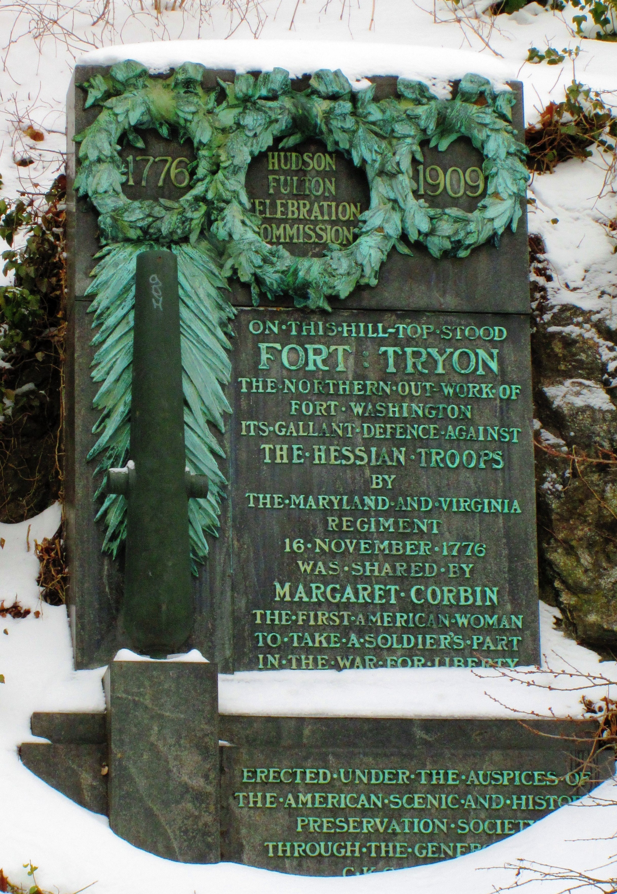
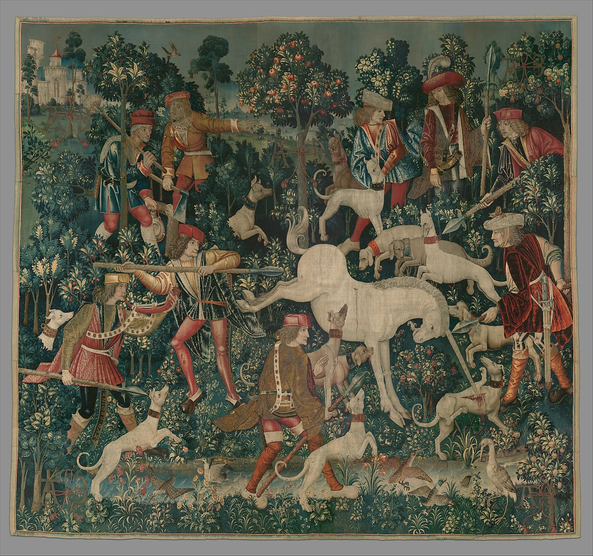
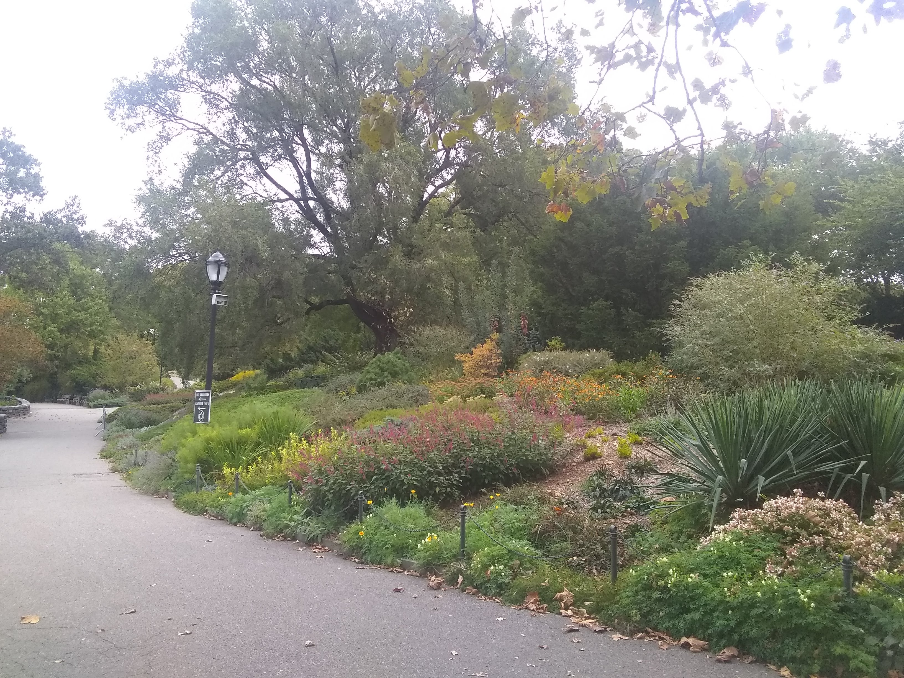

Fort Tryon Park
Fort Tryon is a beautiful and historic park located at the north end of Manhattan island.
History in Fort Tryon Park

Historical marker in Fort Tryon Park
Art in Fort Tryon Park

One of the famous medieval Unicorn Tapestries in the Cloisters Museum
Scenery in Fort Tryon Park

Heather Garden in Fort Tryon Park
 Fort Tryon Park in Winter
Cloisters Museum of medieval art in Fort Tryon Park
Fort Tryon Park in Winter
Cloisters Museum of medieval art in Fort Tryon Park
Events in Fort Tryon Park
 Annual Medieval Festival
Annual Medieval Festival
How to get here